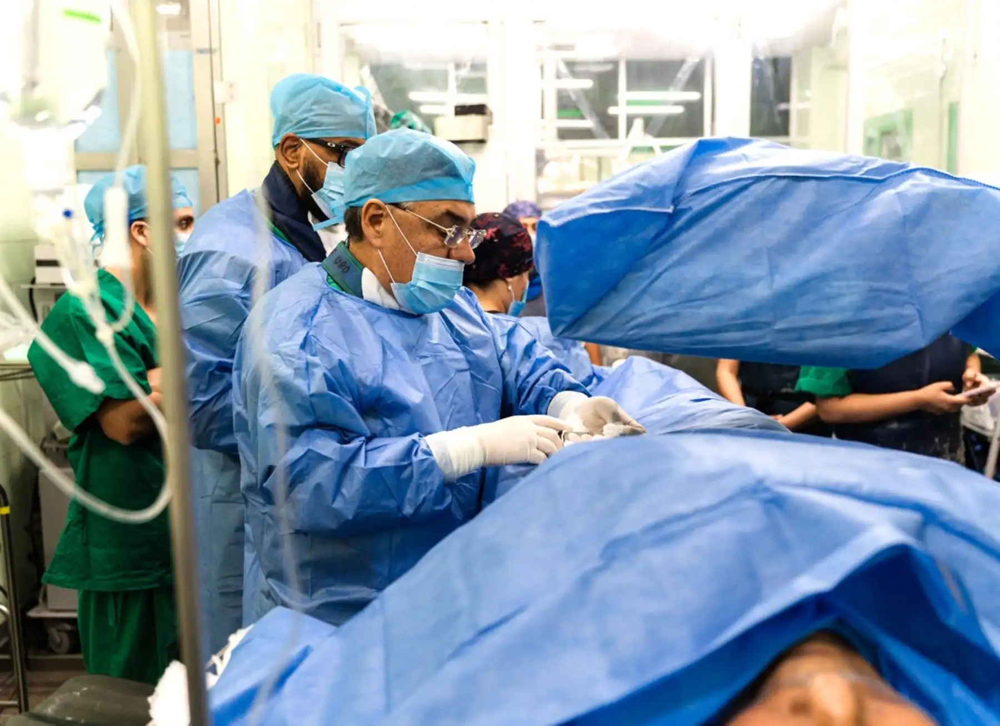

El Seguro Social de Salud (EsSalud) ha incorporado a su cartera de servicios un innovador procedimiento médico mínimamente invasivo que permite tratar la estrechez uretral en un tiempo aproximado de 20 minutos y sin necesidad de recurrir a la cirugía abierta tradicional.
Esta patología, conocida médicamente como estenosis uretral, consiste en el estrechamiento del conducto que transporta la orina desde la vejiga hacia el exterior del cuerpo. Dicha condición genera serias complicaciones urinarias, dolor y afecta de manera significativa la calidad de vida de los pacientes que la padecen, requiriendo históricamente intervenciones quirúrgicas complejas y periodos de hospitalización prolongados.
Con la implementación de esta nueva técnica de alta tecnología en EsSalud, los pacientes diagnosticados con este problema urológico ahora pueden acceder a una solución altamente efectiva, que reduce drásticamente los riesgos asociados a los procedimientos invasivos convencionales y optimiza los tiempos de recuperación dentro de la red asistencial.
El procedimiento destaca fundamentalmente por su rapidez y por eliminar la necesidad de cortes o incisiones quirúrgicas abiertas. Según los especialistas de EsSalud, la intervención se realiza mediante el uso de instrumental endoscópico especializado que se introduce a través de la uretra, permitiendo al cirujano identificar con precisión milimétrica la zona afectada y proceder a la dilatación o apertura del conducto obstruido.
Toda la intervención quirúrgica se completa en un lapso aproximado de 20 minutos. Esta rapidez no solo beneficia al paciente al disminuir el tiempo de exposición a la anestesia, sino que también representa una ventaja logística muy importante para los hospitales de EsSalud, permitiendo una mayor rotación en las salas de operaciones y optimizando el uso de los recursos médicos disponibles.
La incorporación de este procedimiento mínimamente invasivo reafirma el compromiso de EsSalud con la modernización de sus servicios urológicos, ofreciendo alternativas terapéuticas de vanguardia que priorizan el bienestar y la pronta recuperación de los asegurados.
Uno de los aspectos más saltantes de este tratamiento implementado por EsSalud es su carácter ambulatorio. Al tratarse de una técnica que no requiere cirugía abierta, el paciente no necesita permanecer internado durante varios días en un centro hospitalario. Tras la intervención, y luego de un periodo prudencial de observación postoperatoria para garantizar que la micción se realiza de forma adecuada, el paciente recibe el alta médica el mismo día.
Esta rápida salida del hospital reduce notablemente el riesgo de infecciones intrahospitalarias, un factor crítico en cualquier procedimiento médico. Asimismo, el tiempo de recuperación en el hogar se reduce a unos pocos días, permitiendo que el asegurado se reincorpore a sus actividades cotidianas y laborales en un plazo mucho menor en comparación con los métodos tradicionales.
Los urólogos de la institución explican que la estenosis uretral puede originarse por diversos factores, tales como infecciones previas del tracto urinario, traumatismos en la zona pélvica o procedimientos médicos anteriores. Ante la presencia de síntomas obstructivos urinarios, como un flujo débil o dificultad para orinar, EsSalud recomienda a los asegurados acudir de manera oportuna a sus centros de salud para una evaluación especializada que permita descartar o confirmar esta condición y acceder a tratamientos modernos como este.